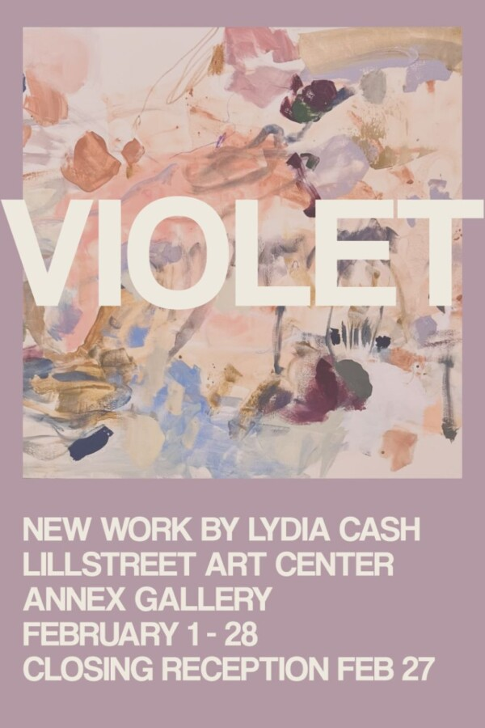

Lydia Cash: Violet
Drawing and Painting Artist-in-Residence Lydia Cash presents Violet. Her work bridges the gap between her visual art and music through her most recent collection of paintings, named after her upcoming album, “Violet”.
At its core, “Violet” is about healing one’s inner child. Vulnerable, honest, and defiant, it is a glittering ode to radical self-love and female empowerment. Each of the ten paintings are inspired the ten songs on the album. Cash views the act of painting itself as a healing practice, through risk-taking, play, and intuitive mark making.
Artist talk : Feb 27, 2026 5 PM
RSVP HERE